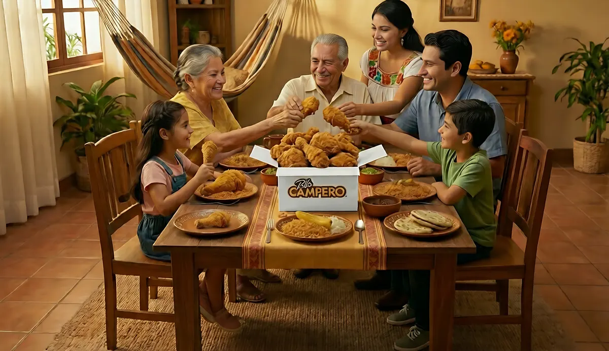

Pollo Campero
Pollo Campero – Tradición Familiar
Nota: Pollo Campero es un alimento muy querido en Centroamérica. Nuestra familia lo disfruta como parte de nuestras tradiciones, y sabemos que muchos viajeros lo traen en cajas frías desde Guatemala o El Salvador para compartir en casa.
Aquí compartimos recomendaciones para recalentar y disfrutarlo con el mejor sabor, tal como lo hacemos en familia.

Historia cultural del alimento
Pollo Campero se originó en Guatemala y se convirtió en un pilar en El Salvador desde 1972. Está profundamente ligado a tradiciones familiares, celebraciones y recuerdos de la infancia. Muchos viajeros llevan cajas de Pollo Campero desde el aeropuerto para compartir con sus seres queridos – porque sabe a casa.
Para nuestra familia, disfrutar Pollo Campero significa revivir herencia, recuerdos preciados y el auténtico Sabor Campero.
¿Por qué Pollo Campero?
- Auténtico: Receta original guatemalteca desde 1971
- Nostálgico: Sabor que conecta con el hogar y la infancia
- Familiar: Perfecto para reuniones y celebraciones
- Exclusivo: Difícil de encontrar fuera de Centroamérica
Recomendaciones para recalentar
El pollo suele entregarse frío en caja. Para recuperar textura crujiente y sabor, use uno de estos métodos:
Método Air Fryer (Rápido y crujiente)
- Precaliente la freidora a 190°C (375°F).
- Coloque el pollo en una sola capa en la canasta (no sobrecargue).
- Recaliente 4–6 minutos, volteando a la mitad si las piezas son grandes.
- Verifique la temperatura interna: debe alcanzar 74°C (165°F).
- Deje reposar 1–2 minutos antes de servir.
Método Horno (Más lento pero confiable)
- Precaliente el horno a 200°C (400°F).
- Coloque el pollo sobre una rejilla encima de una bandeja para hornear para mantener la corteza crujiente.
- Opcional: cubra flojamente con papel aluminio la primera mitad para evitar que se reseque; luego retire para dorar.
- Hornee 12–15 minutos, volteando a la mitad si no usa rejilla.
- Verifique que la temperatura interna alcance 74°C (165°F).
- Deje reposar 2 minutos antes de servir.